室内资产确认册
12 套设计图 · 56 类独立资产 · 六个房间主题与通用室内元素
最新方向：始终以黑暗氛围为主；空间可以破旧，也可以漂亮，秩序与色彩制造心理不适。
常态保留完整或轻度使用痕迹；破损作为局部变体。下面是已生成的候选图，部分磨损偏重，待统一确认。本页不是游戏实景，也不表示这些模型已经生成或接入。
常态保留完整或轻度使用痕迹；破损作为局部变体。下面是已生成的候选图，部分磨损偏重，待统一确认。本页不是游戏实景，也不表示这些模型已经生成或接入。
整体氛围提案
暖色生活空间、冷色纵深与局部异色焦点。此图先于最新参考生成；后续将减少全局破败，提高完整表面、明确色块与重复秩序的占比。
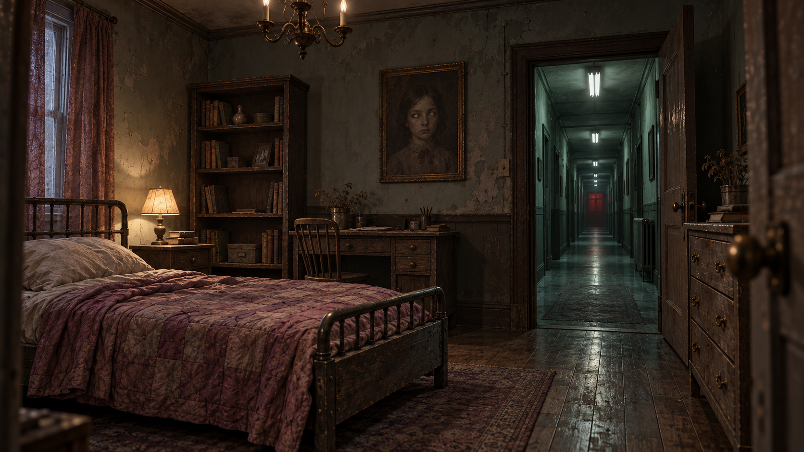
旧卧室 · 预设 01
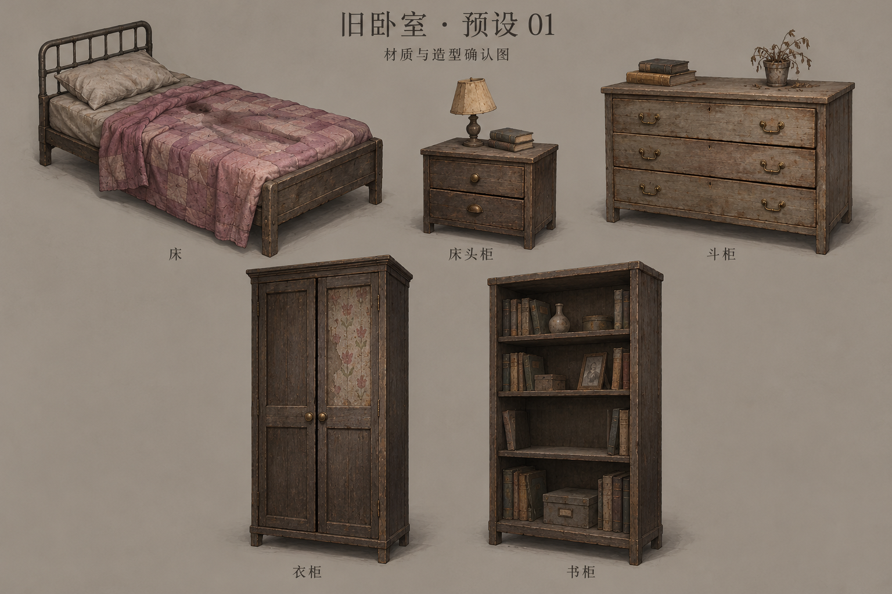
查看资产命名
- 单人旧床
furniture-bed-single - 床头柜
furniture-nightstand - 斗柜
furniture-dresser - 衣柜
furniture-wardrobe - 书柜
furniture-bookcase
空客厅 · 预设 02
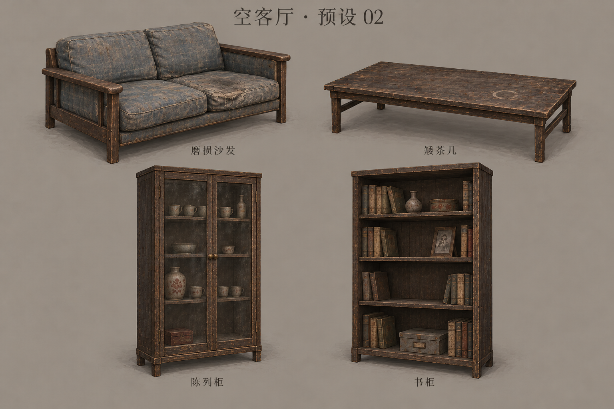
查看资产命名
- 双人沙发
furniture-sofa-two-seat - 矮茶几
furniture-coffee-table - 陈列柜
furniture-display-cabinet - 书柜
furniture-bookcase
旧育儿室 · 预设 03
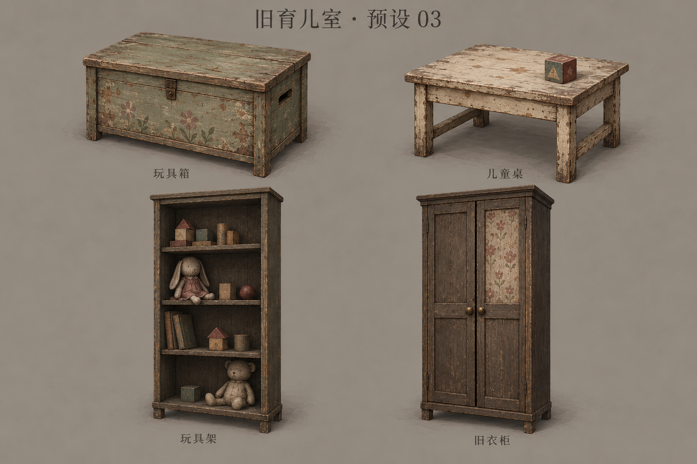
查看资产命名
- 玩具箱
furniture-toy-chest - 儿童桌
furniture-child-table - 玩具架
furniture-toy-shelf - 衣柜
furniture-wardrobe
诊疗室 · 预设 04
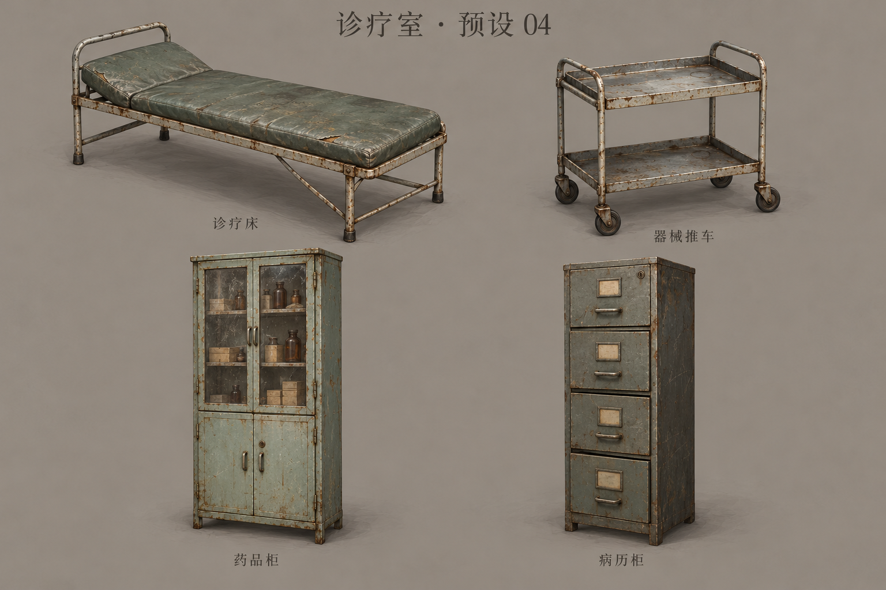
查看资产命名
- 诊疗床
furniture-examination-cot - 器械推车
furniture-instrument-trolley - 药品柜
furniture-medicine-cabinet - 病历柜
furniture-medical-file-cabinet
旧档案室 · 预设 05
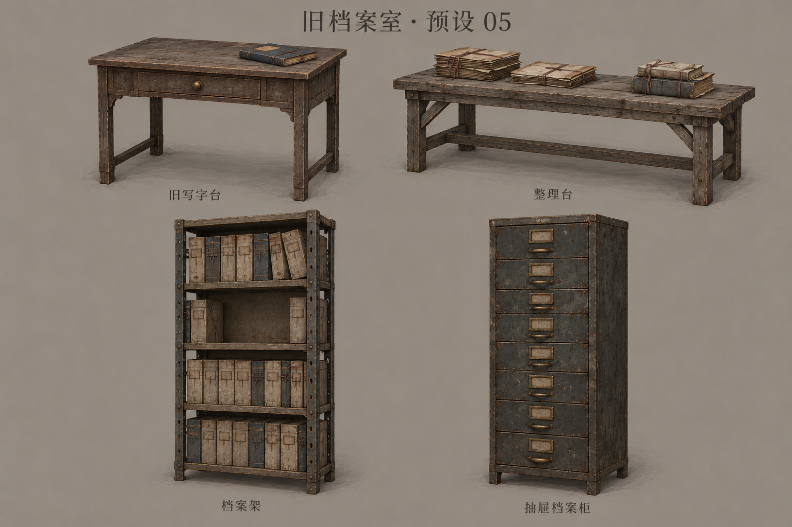
查看资产命名
- 写字台
furniture-writing-desk - 档案整理台
furniture-document-table - 档案架
furniture-archive-shelf - 多抽屉档案柜
furniture-multi-drawer-file-cabinet
供奉室 · 预设 06
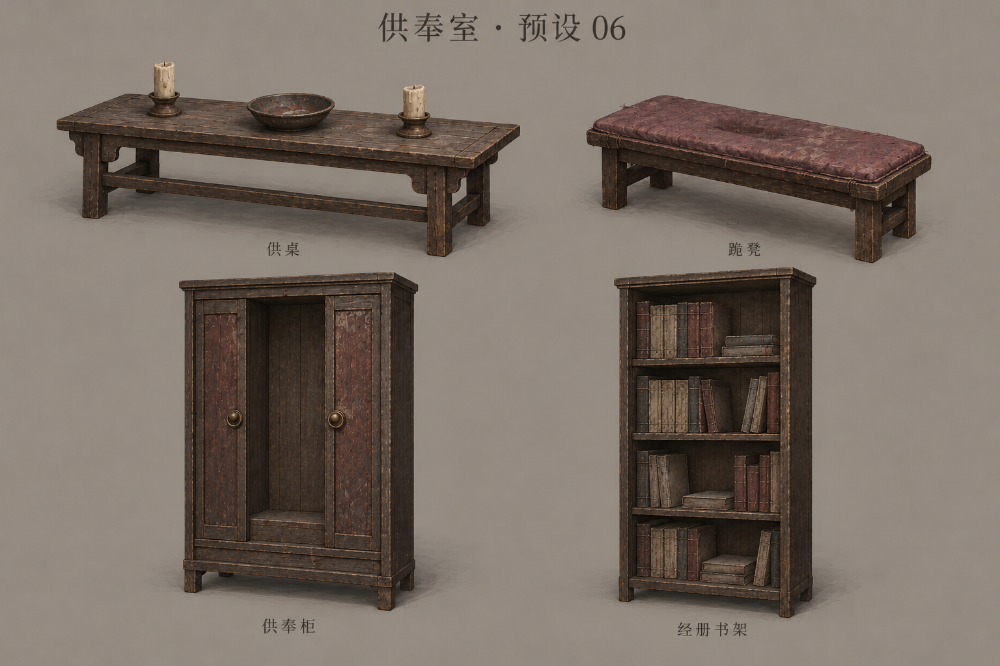
查看资产命名
- 供桌
furniture-offering-table - 跪凳
furniture-kneeling-bench - 供奉柜
furniture-shrine-cabinet - 书柜
furniture-bookcase
通用桌椅 · 预设 07
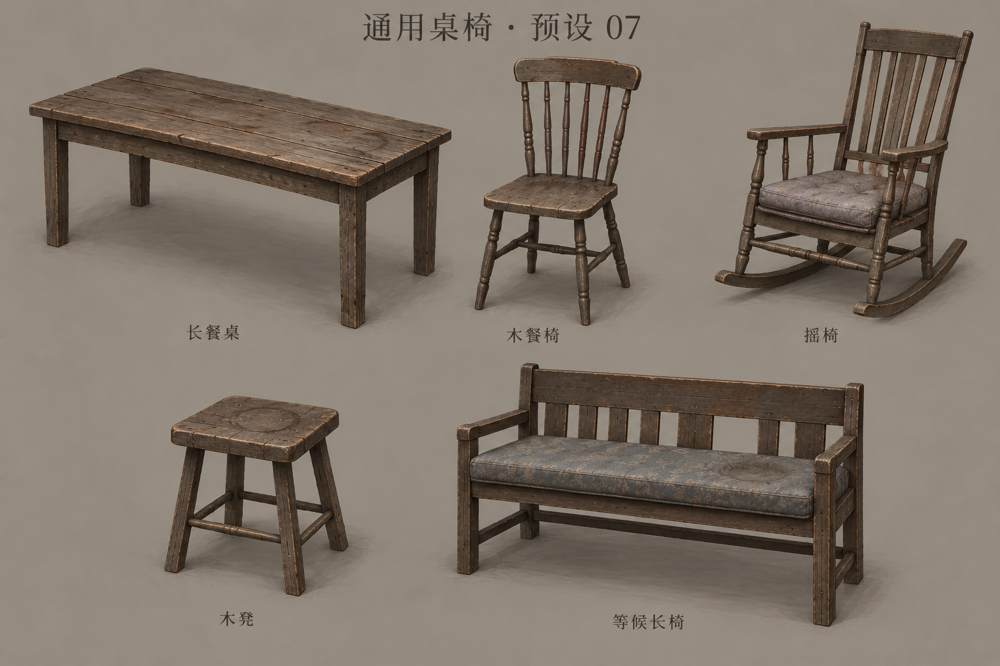
查看资产命名
- 长餐桌
furniture-dining-table - 木餐椅
furniture-dining-chair - 摇椅
furniture-rocking-chair - 木凳
furniture-stool - 等候长椅
furniture-waiting-bench
室内灯具 · 预设 08
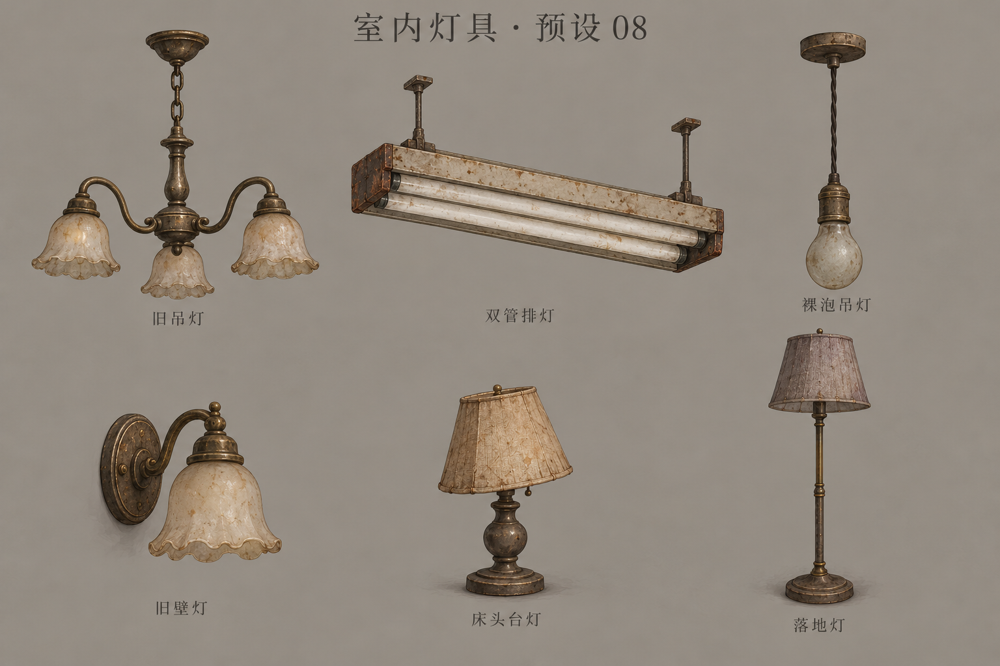
查看资产命名
- 三臂吊灯
lighting-chandelier-three-arm - 双管排灯
lighting-strip-double - 裸泡吊灯
lighting-pendant-bare-bulb - 壁灯
lighting-wall-sconce - 台灯
lighting-table-lamp - 落地灯
lighting-floor-lamp
诡异壁画与镜面 · 预设 09
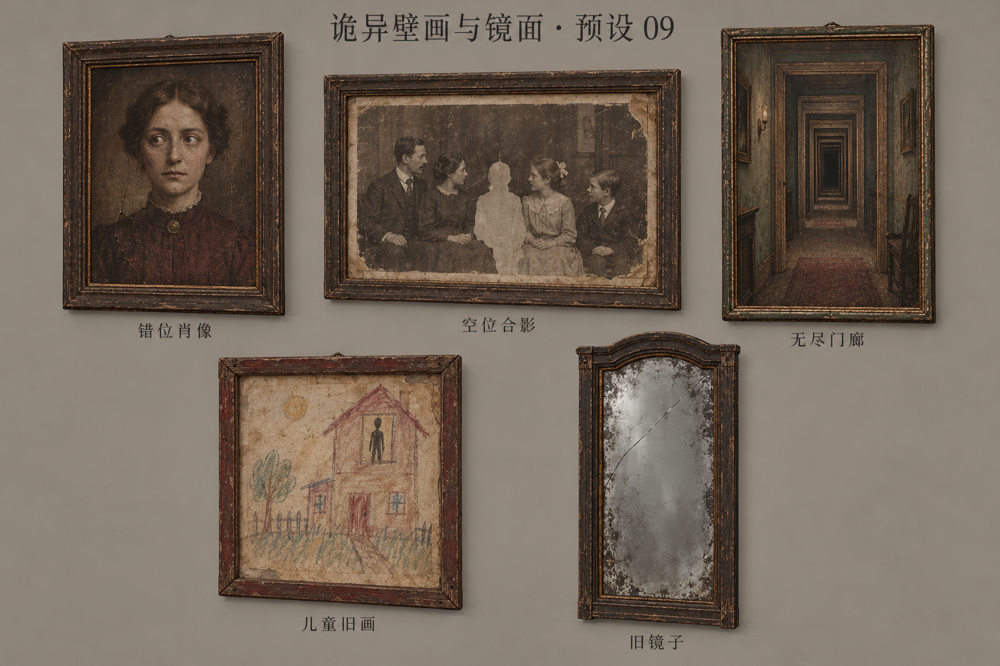
查看资产命名
- 错位肖像
wall-art-misaligned-portrait - 空位合影
wall-art-missing-person-photo - 无尽门廊画
wall-art-endless-corridor - 儿童旧画
wall-art-child-house-drawing - 旧镜子
fixture-mirror-aged
门窗与室内杂物 · 预设 10
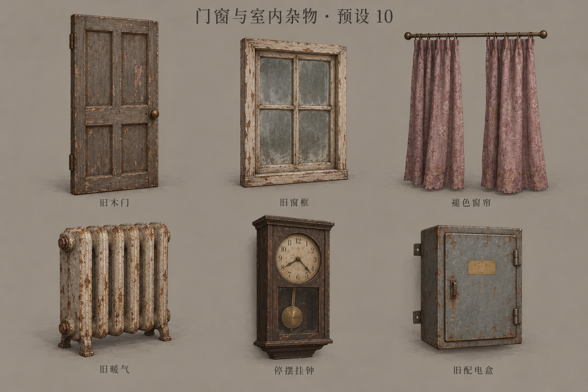
查看资产命名
- 旧木门扇
architecture-door-panelled - 四格窗框
architecture-window-four-pane - 褪色窗帘
fixture-curtain-faded - 铸铁暖气
fixture-radiator-cast-iron - 停摆挂钟
fixture-wall-clock-pendulum - 配电盒
fixture-fuse-box
墙纸与墙面 · 预设 11
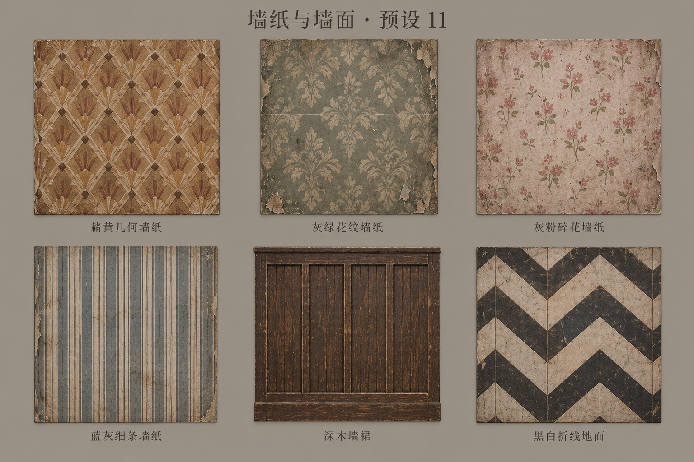
查看资产命名
- 赭黄几何墙纸
material-wallpaper-ochre-geometric - 灰绿花纹墙纸
material-wallpaper-sage-damask - 灰粉碎花墙纸
material-wallpaper-dustyrose-floral - 蓝灰细条墙纸
material-wallpaper-bluegray-stripe - 深木墙裙
architecture-wainscot-darkwood - 黑白折线地面
material-floor-chevron-ivory-charcoal
破损墙体与帷幕 · 预设 12
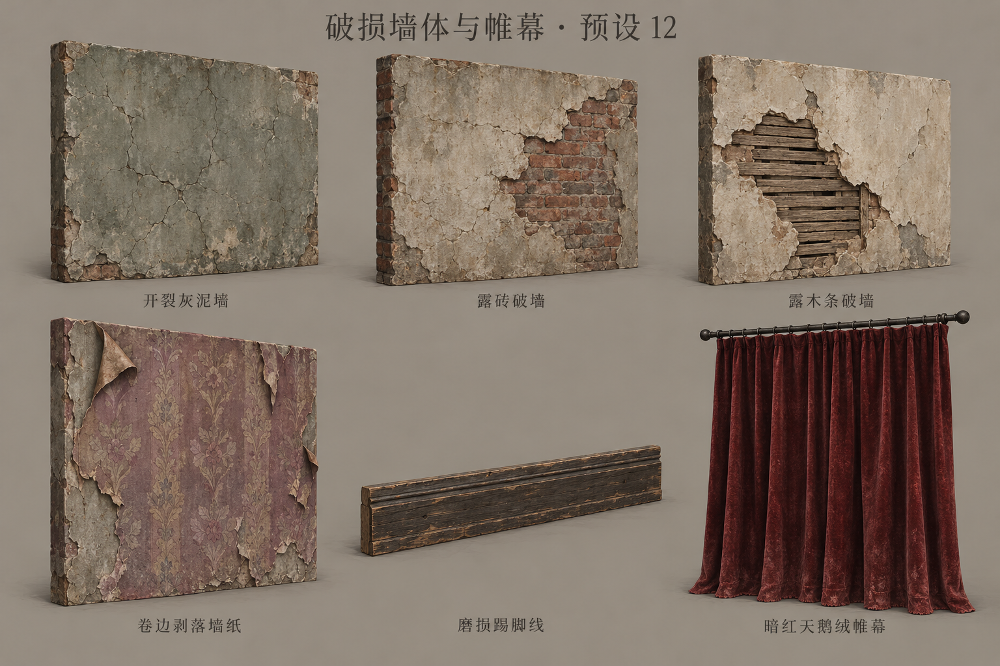
查看资产命名
- 开裂灰泥墙
architecture-wall-plaster-cracked - 露砖破墙
architecture-wall-exposed-brick - 露木条破墙
architecture-wall-exposed-lath - 卷边剥落墙纸
architecture-wallpaper-peeled - 磨损木踢脚线
architecture-skirting-wood-worn - 暗红天鹅绒帷幕
fixture-curtain-oxblood-velvet